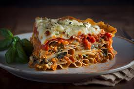

Lasagna Recipe

Description
Lasagna is a classic Italian dish that has become a favorite comfort food around the world. It is a layered pasta dish traditionally made with sheets of lasagna noodles, rich meat sauce, creamy béchamel or ricotta cheese, and melted mozzarella. The combination of hearty flavors and satisfying textures makes lasagna a versatile meal, perfect for family dinners, celebrations, or even casual gatherings. Each bite is a delicious blend of savory, cheesy goodness balanced with the sweetness of tomatoes and the aromatic kick of Italian herbs like oregano and basil.
Over time, lasagna has evolved to include a variety of interpretations and dietary preferences. Some versions use vegetables like spinach or zucchini in place of noodles for a lighter option, while others swap the meat for plant-based alternatives to make it vegetarian. Whether traditional or modern, lasagna remains a dish that warms the soul and brings people together over its comforting and flavorful layers.
Ingredients
- Lasagna noodles
- Ground beef or Italian sausage
- Marinara sauce or tomato sauce
- Ricotta cheese
- Shredded mozzarella cheese
- Grated Parmesan cheese
- Egg (optional, for ricotta mixture)
- Garlic cloves (minced)
- Onion (chopped)
- Olive oil
- Salt
- Pepper
- Dried Italian herbs (oregano, basil, thyme)
- Fresh parsley (chopped, optional for garnish)
Steps
- Preheat your oven to 375°F (190°C).
- Cook the lasagna noodles according to the package instructions, then drain and set aside.
- In a skillet, heat olive oil over medium heat and sauté the chopped onion and minced garlic until fragrant.
- Add the ground beef or Italian sausage to the skillet, cooking until browned. Drain excess fat if needed.
- Stir in marinara or tomato sauce and season with salt, pepper, and dried Italian herbs. Simmer for 10 minutes.
- In a bowl, mix ricotta cheese, egg (optional), half of the grated Parmesan cheese, and a pinch of salt.
- Grease a baking dish and spread a thin layer of the meat sauce at the bottom.
- Lay down a single layer of lasagna noodles, followed by a layer of the ricotta mixture, meat sauce, and shredded mozzarella cheese.
- Repeat the layers until all ingredients are used, ending with a top layer of sauce and mozzarella cheese.
- Sprinkle the remaining Parmesan cheese over the top layer.
- Cover the dish with aluminum foil and bake for 25 minutes.
- Remove the foil and bake for an additional 15-20 minutes, or until the cheese is golden and bubbly.
- Let the lasagna cool for 10-15 minutes before slicing.
- Garnish with chopped parsley if desired and serve warm.